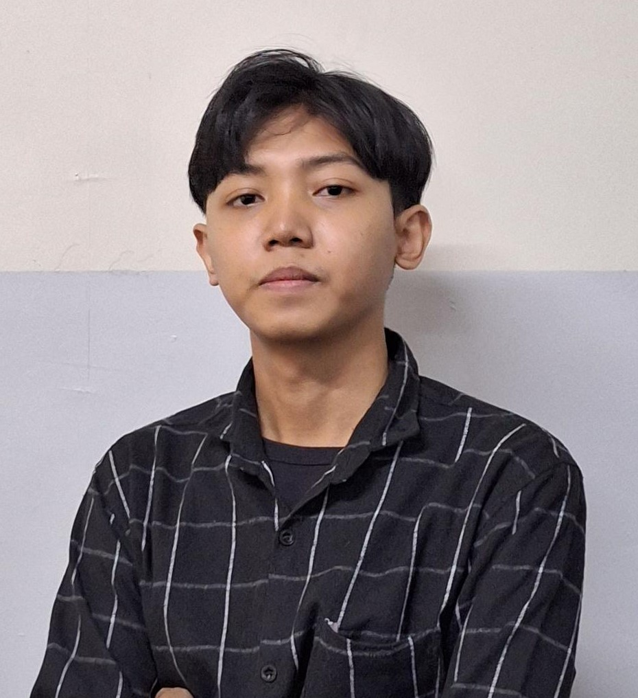

Wadi Wahyudin

Summary
I am a person who is highly motivated
at work, has good communication and is
quick to learn new things. I love
challenges. I have been associated with
the world of computers since I was in
junior high school until now. In my daily
life, I like to explore the world of
computers, especially programming.
Education
-
Bachelor of Computer Science,
Informatics - Universitas Gunadarma
(2019 - 2023) GPA 3.77
Work Experience
-
Metaverse Developer - Kemendikbud Dikti.
September 2022 - December 2022
- Contributed to the creation of the "Metaversitas" project
- Created a prototype project using the Unity platform
- Creating controllers for VR and Web characters using XROrigin
- Creating movement animations for the character
- Create movement on the character
- Make the character interact with objects through laser in VR
- Create a special keyboard file input
- Create relief mapping and statues in the Borobudur scene
- Create a player displacement feature when climbing the Borobudur stairs
-
Mentor Metaverse Developer - Kemendikbud Dikti
September 2023 - Present
- Guiding Mentee to be able to discuss with the development team with a culture of good cooperation
- Guiding Mentee to be able to work together with the development team with a culture of good cooperation
- Guiding mentees to be able to use unity to develop vr programs for metaversitas
- Guiding Mentee to be able to plan and organize the assigned tasks well
- Guiding Mentee to be able to learn independently and explore unity to develop vr programs for metaversitas.
In Addition, i also contributed to:
- Create a UI Login Scene and simple authentication login with Rest API
- Get Data from Rest Api and Displaying data to UI
- Create a Icon Indicator for Push To Talk Voice feature on Fusion Multiplayer
- Display data from back end to UI
- Adding different video feature every "Pertemuan 1/2/3/4" is open
- Setting relief position on borobudur
- Setting relief plants position on borobudur
-Adding a statue on borobudur
Skills
- C# (Unity): ⭐️⭐️⭐️⭐️⭐️
- Dart (Flutter) : ⭐️⭐️⭐️⭐️
- Python: ⭐️⭐️⭐️
- Big Query: ⭐️⭐️⭐️
- Looker studio: ⭐️⭐️⭐️⭐️
Awards and Certifications
-
Certificate Of Appreciation · Best Graduation Multi-Platform and Back-End on Dicoding
-
Certificate of Completion · Multi-Platform and Back End (Flutter) at MSIB with Dicoding
-
Certificate of Completion · Metaverse Developer (Unity Development) at MSIB with Kemendikbud Dikti
-
Certificate of Completion · Data Analyst at Generasi Gigih 3.0 with GoTo Impact Foundation
Other